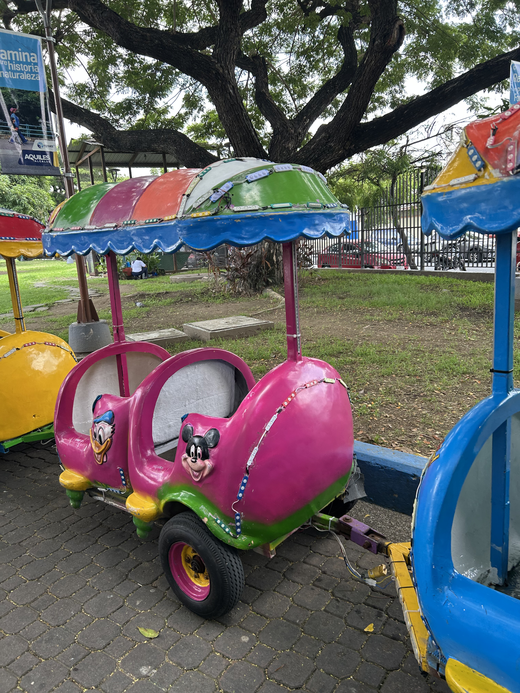
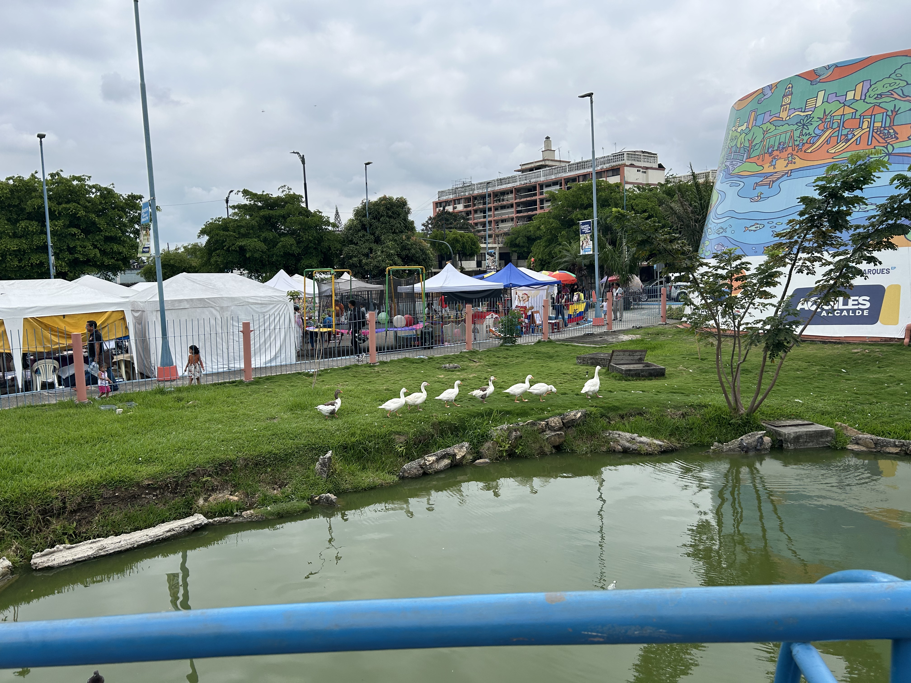
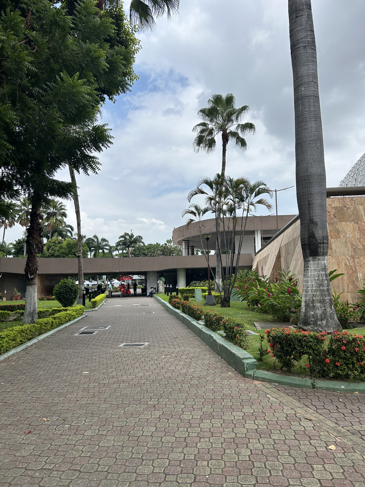
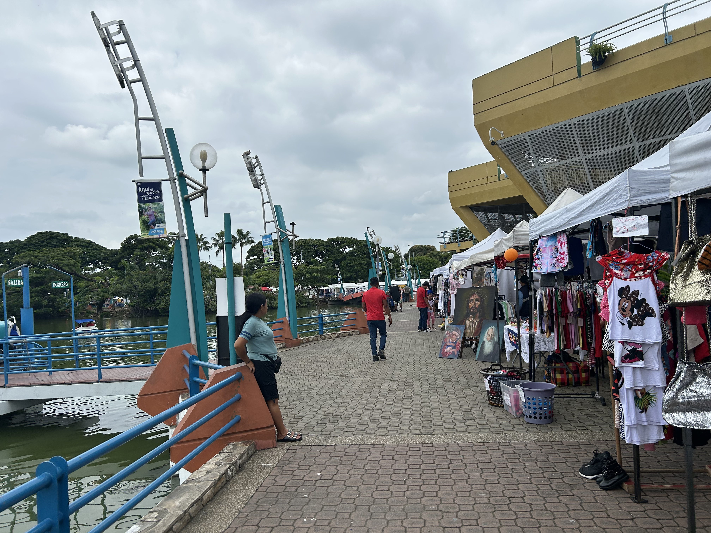

Actividades del paseo
Juegos infantiles
El parque cuenta con trampolín y carrusel, opciones de entretenimiento para los más pequeños. La disponibilidad de los juegos puede variar según su mantenimiento.

- Público ideal: familias con niños pequeños que buscan actividades recreativas al aire libre.
- Dónde: zona de juegos infantiles dentro del parque; consulta la señalización al llegar.
- Tiempo sugerido: 30 a 45 minutos, según la cantidad de juegos disponibles y el ritmo de los niños.
Observación de fauna
En la laguna de 450 metros y sus alrededores habitan distintas especies, como garzas, patos silvestres, tortugas, peces e iguanas. Este espacio permite observar la fauna del parque y apreciar su entorno natural.

- Público ideal: familias, parejas, aficionados a la naturaleza y personas interesadas en observar aves y otros animales.
- Dónde: sector de la laguna y sus alrededores, desde las áreas de circulación habilitadas.
- Tiempo sugerido: 20 a 40 minutos, dependiendo de la fauna visible y del interés del visitante.
Picnic y caminatas
Las áreas verdes, los puentes y las camineras permiten recorrer el parque a pie y compartir un momento al aire libre. Es una alternativa para disfrutar del paisaje, descansar y reunirse con familiares o amigos.

- Público ideal: familias, parejas, grupos de amigos y personas que buscan descansar o caminar al aire libre.
- Dónde: áreas verdes y camineras del parque; selecciona un espacio permitido para descansar o realizar el picnic.
- Tiempo sugerido: 45 a 90 minutos, según el recorrido y el tiempo que se desee dedicar al descanso.
Ferias de emprendimiento
El Parque Forestal es escenario de ferias donde los emprendedores pueden exhibir y ofrecer sus productos. Según el evento, los visitantes pueden encontrar artesanías, gastronomía y otras iniciativas locales. Las fechas y actividades disponibles dependen de cada convocatoria.

- Público ideal: familias, visitantes interesados en productos locales y personas que desean conocer emprendimientos, artesanías y propuestas gastronómicas.
- Dónde: espacio habilitado para la feria dentro del parque; consulta la convocatoria para confirmar la ubicación y la fecha del evento.
- Tiempo sugerido: 45 a 90 minutos, según la cantidad de puestos, las actividades y el interés del visitante.